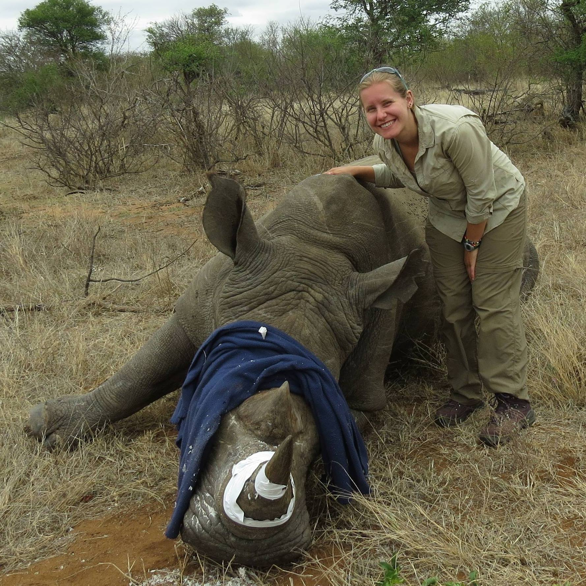

"Not all those who wander are lost" - J.R.R. Tolkien
Tagging white rhinos in South Africa for anti-poaching efforts
Playing gendèr in a concert in Surakarta, Indonesia
Essence
My name is Anna McDermott. I was born and raised in the Pacific Northwest, though am an avid traveller with a goal to see as much of the world as possible. I graduated from the University of Washington in Tacoma with a Master of Science degree in geospatial technologies in August 2018. I enjoy spending time with friends and family, taking walks, and playing with my cats, Monroe and Lady Marilyn Grey.
My passion for wildlife and conservation has given me countless amazing experiences. I am lucky to have worked at a wildlife rehabilitation sanctuary, a zoo, and in the fields of South Africa and the Greater Yellowstone Ecosystem. The desire to contribute to conservation work led me to a GIS program that opened my eyes to a new and exciting path, sparking my enthusiasm to pursue further geospatial studies.
Another love of mine is music. I grew up singing and playing viola, and while in college, I started playing traditional Javanese gamelan. It stole my heart just as it had my dad's (a music/composition professor) decades ago and I have continued to play throughout the years, including a time of study in the city of Solo, Java, Indonesia. While in Washington, I play with the Seattle group Gamelan Pacifica.
Education
Master of Science in Geospatial Technologies from University of Washington in Tacoma, 2018.
GIS Certificate from University of Washington in Tacoma, 2017.
Bachelor of Arts in Biology with a minor in Government from Smith College, 2011.